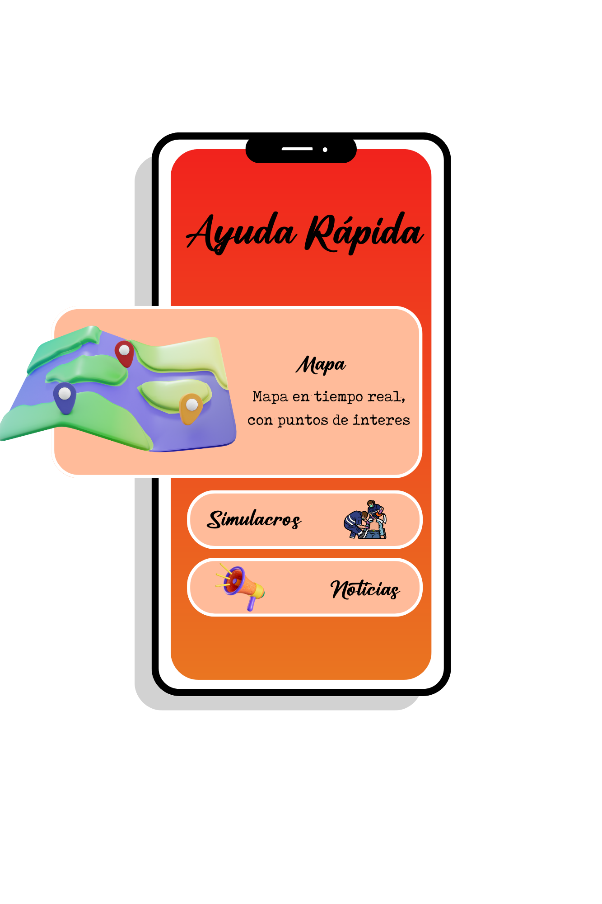

.png) //
//



App
En esta pagina web encontraras información sobre sistemas de emergencias, e información en tiempo real lo que se busca es poder crear una APP al alcance de tus manos con toda esta información, donde podras comunicarte ver en el mapa zonas afectas y puntos de interes, además de que hacer en situaciones de riesgo.